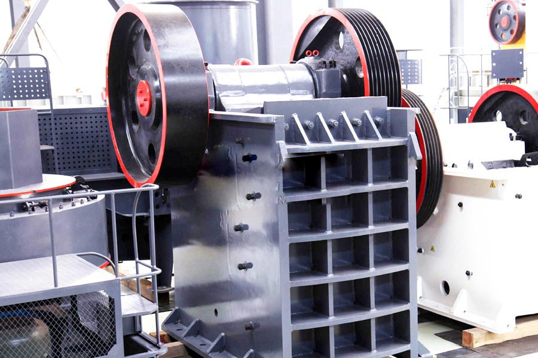

Construction waste crushing production line

Mobile construction waste crushing station for urban construction waste crushing.
turnkey dolomite crushing plant
turnkey dolomite crushing plant. Dolomite mineral processing equipment, supply industry's most advanced dolomite mineral processing equipment, 100mm dolomite again after a jaw crusher to 100mm or less. -40mm Dolomite ore into spiral washing machine, washing mud off the job performed. After washing the particles as fine tailings abandoned, others with 40mm-100mm.
Dolomite mill, grinder dolomite, dolomite crusher, CAG based on extensive use of dolomite, designed by the company of a number of experts developed a European version of the mill Mill, not only for the further processing of dolomite use played numerous advantages.

Dolomite crusher
CAG Machinery (Dolomite crusher) in mineral processing aspects widely used, many customers get more benefits, CAG product also mainly for minerals, rock crusher, mineral grinding, sand stone and mineral processing and other fields. We provide Dolomite crusher technical guidance, based on your specific needs, for your rational design of production lines.
Because the tariff is low, you can (Dolomite crusher) to save a lot of costs, it can also be purchased to get more benefits, our products and designs for you is really value for money.
Egypt dolomite crusher for sale. Dolomite mining is important for industry. Dolomite is kind of carbonate mineral which includes iron dolomite and manganese dolomite. Dolomite is the main mineral component composed of dolomite and dolomite . The dolomite can be used in building materials, porcelain, glass and refractory after dolomite crushing. In chemical industry, agriculture, environmental protection, energy conservation, etc, the dolomite is in a great demand too and so the dolomite crusher is widely applied. The dolomite is mainly used as the flux of Basic Refractories and blast furnace. Here you can choose best dolomite crusher machines for dolomite crushing.
Dolomite processing equipment, dolomite crusher, dolomite sand, dolomite dolomite jaw crusher jaw crusher working environment: in the huge stones broken into small stones in the process, the first broken machine commonly referred to as the "main" crusher. When the jaw crusher feeding of the material from the top.
Dolomite Application In Industry
1. Application in metallurgical industry: In the metallurgical industry, dolomites are mainly used as flux, refractories, refining of metal magnesium and magnesium compounds after dolomite mining.
2. The usage in building materials industry: Calcined dolomite can be processed to make dolomitic line which is of good White, strong adhesion, coagulation power, Fire-resistant, heat insulation. In these stages, dolomite crusher equipments are needed. Therefore the dolomite is suitable for Interior and exterior wall coating. The calcined dolomite can be used in Magnesium chloride cement and concrete curing. After adding other brasque, they can be used for flooring. What’s more, the dolomites can be directly used as building materials. There are many dolomite crushing machines which can help broad dolomite application in dolomite mining or quarrying.
3. Application in chemical industry: In chemical industry, the dolomite is mainly used to produce chemicals, such as Magnesium sulfate, Light magnesium carbonate, etc. Dolomite crusher can crush the stone to required fineness which is suitable to production. Apart from all these above, the crushed dolomite powder has been widely applied in agriculture, filler, etc. After dolomite mining and crushing, we can use it to make more products which are often used in various of industries.
Case Introduction
Mechanized shaft kiln system is more mature application process system at home and abroad. The system adopts automation control which greatly reduces the labor intensity While completely eliminating of the human factors.
Egypt dolomite crusher supplier. From the first mixing, loading to roasting, discharging, the mechanized shaft kiln system adopts automatic control, and is equipped with electronic measuring scale. In the automatic equipments, dolomite mining machines and dolomite crusher are also included. Therefore the various raw materials can be a good level of mixing uniformity which ensures the distributing and heating uniformity, quality and stability.
Calcined dolomite will be transported into finished hopper if the degree of fineness is between 5mm and 45mm. Otherwise the calcined dolomite will be put back into the storage for recycling. In this way we can not only avoid the emission of solid waste, but also improve the grade of powder mine. Using dolomite crusher, we can easily crush the calcined dolomite and use it in production.
For dolomite mining and crushing to required fineness, we usually use the jaw crusher as the first dolomite crusher equipment and the impact crusher or cone crusher is usually used as secondary or tertiary dolomite crushing machine. In the whole dolomite crushing plant, we use vibrating feeder to transport the materials to specified machine which is similar with the usage in the mechanized shaft kiln system mentioned above. Vibrating screen machine can separate the kinds of finished products. Considering all these, we can supply you with suitable dolomite crusher machines, feeding and screening plant. Welcome to choose our dolomite crushing machine.
Dolomite beneficiation process and milling processes, dolomite beneficiation process and processing: dolomite ore by screening, crushing, grinding, and then in addition to better iron, get quality dolomite powder, product fineness can reach 2800 mesh the above.
Egypt dolomite crusher price. Dolomite crusher, cement plant dedicated crusher, dolomite processing equipment provided by the Zhengzhou Jianye Machinery Co., hammer crusher, heavy hammer crusher has many years of history, advanced product structure, reliable performance, smooth operation, Low energy consumption.
Leave Me A Message, Now
If you have any questions regarding equipment prices, production line configuration or other problems, you can send a message to us, we will contact you soon.